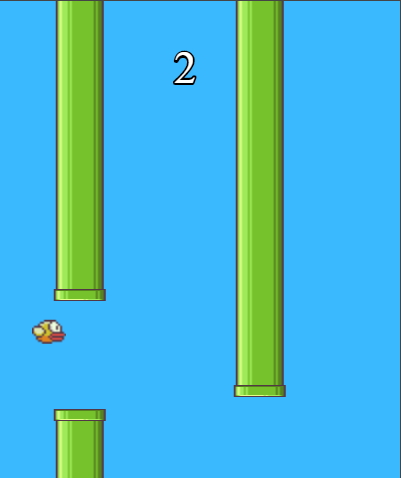
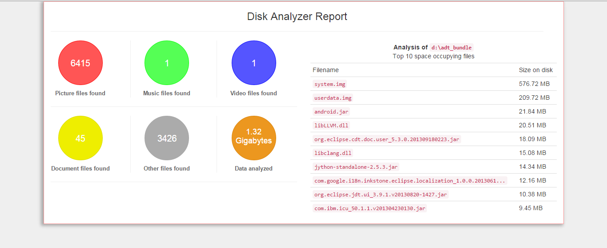

Flappy Bird
A clone of Flappy Bird game built using javascript with PhaserJS game engine.
Use spacebar or touch the screen to make the bird jump and try to avoid the pipes.
Play View Source
1024
A fully responsive clone of 2048 game built using plain javascript.
Use arrow keys or swipe to move the number tiles and combine tiles with similar value. You win when you make a tile of value 1024.
Play View Source

Disk Analyzer
A Java tool that can analyze your disk and generate useful reports about the types of files
It also exposes an API that can be imported and used in any project to scan a particular location and generate reports.
View SourceComic Relief
Java tool and API that can be used to convert a set of movie and its subtitle into comics.
Depends on FFMPEG for the conversions.
View Source